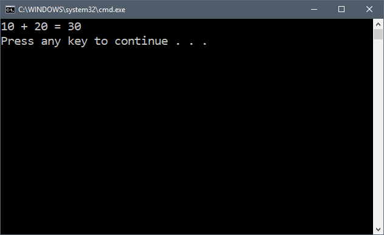
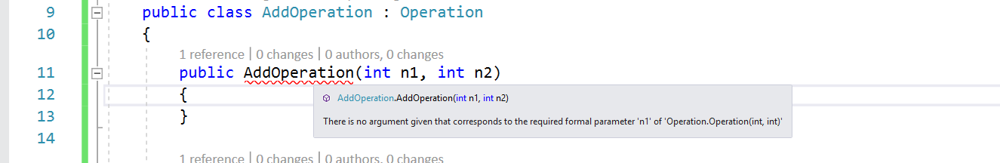
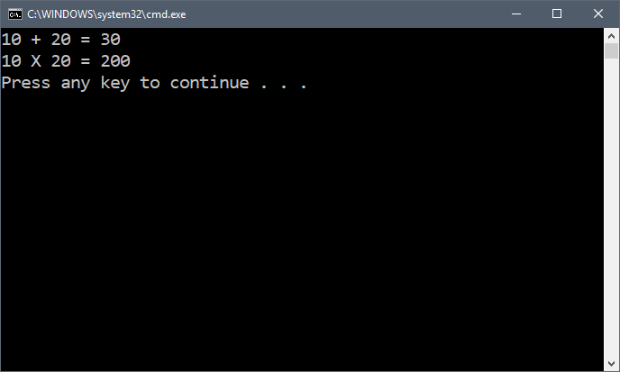

Duration
10 minutes
Lab goals
In this exercise, you will take an existing class which performs an Add operation and extract a base class from it to use with other types of mathematical operations. You will then create a few additional derived classes and use them in program.
Required Assets
There is a Exercise 1 folder included with this lab exercise which contains a starter project you should use to get started, and a completed project if you'd like to compare your work to the solution.
Steps
This is a individual exercise, intended to be done on your own, use the step-by-step instructions to complete the exercise.
Open the starter project
As a first step, let's open the starter project.
- Launch Visual Studio and open the DerivedTypes solution in the Exercise 1/Start folder.
- Open the AddOperation.cs file located in the DerivedTypes project.
- Run the application. It should display the calculation: 
namespace DerivedTypes
{
public class AddOperation
{
public int FirstNumber { get; set; }
public int SecondNumber { get; set; }
public AddOperation(int n1, int n2)
{
FirstNumber = n1;
SecondNumber = n2;
}
public string Calculate()
{
return string.Format("{0} + {1} = {2}",
FirstNumber, SecondNumber,
FirstNumber + SecondNumber);
}
}
}
It is a simple class which has two properties that hold integer values. These two properties are initialized in a constructor that takes two integer values. Finally, it has a single Calculate method which returns a string representing the performed calculation.
Create a base class from AddOperation
Our goal is to create another operation for Multiply which will work exactly the same way. Since this new operation will also work with two integers, it makes sense to extract the common logic and properties into a base class in C#. Here we will break the AddOperation class into two related classes and verify that it still functions properly.
-
Add a new empty class to the DerivedTypes project and name the file Operation.cs.
- Recall that one way to do this is to first select the DerrivedTypes project in the solution pane (not the top-level solution), and then use the menu File > New File. Alternatively, you can right-click on the project and select Add > New File to show the New Item dialog.
- From the New Item dialog, select "Empty Class" or "Visual C# Class" in the General section.
-
Open the Operation.cs file - there should already be a class named
Operationin it. -
Copy the
FirstNumberandSecondNumberproperties from theAddOperationclass into this new class. -
Modify the constructor to take two integers and initialize the two properties - just like
AddOperationdoes. -
Finally, remove the two properties from
AddOperationand change the class definition to indicate that it derives fromOperation- check the slides if you need help with the syntax, or expand the below code hint. - Try to compile the application - notice that you get an error: 
- See if you can fix the error, remember in the slides when we discussed calling non-default constructors?
-
Once the error is corrected, you can remove the two property setters in the
AddOperationconstructor. You can verify your code against the below code hint if desired. - Run the code to make sure it all still works properly - you should get exactly the same results as before.
Create a derived class
Next, let's create a MultiplyOperation class. You can use the existing AddOperation as a guide, or follow these instructions.
-
Create a new class named MultiplyOperation.cs in the project.
-
Have it derive from
Operation. - Create a parameterized constructor with two numbers and pass them into the base class.
-
Copy the
Calculatemethod fromAddOperation, but change it to be a multiplication result.
-
Have it derive from
Use your derived class
Finally, let's modify the program logic to use both the AddOperation and new MultiplyOperation together.
-
Open the Program.cs file and locate the
TODO:comment after theAddOperationusage. -
Using the
AddOperationcode just above this as a model, use your newMultiplyOperationto multiply two numbers and print the result into the console. - Run the application to verify you see the proper results - there should now be two operations printed to the screen. 
Optional: Create a 3rd derived class
If you have time, try creating another operation-derived class; for example a SubtractOperation or ModuloDivisionOperation. Make sure to add code to utilize your operation into Program.cs.
Summary
Congratulations! You have successfully utilized class derivation to share common behavior between multiple classes. This is a very powerful feature of C# that allows us to reuse tested, working code in different ways. There is a completed project in the lab materials if you'd like to examine the final results.